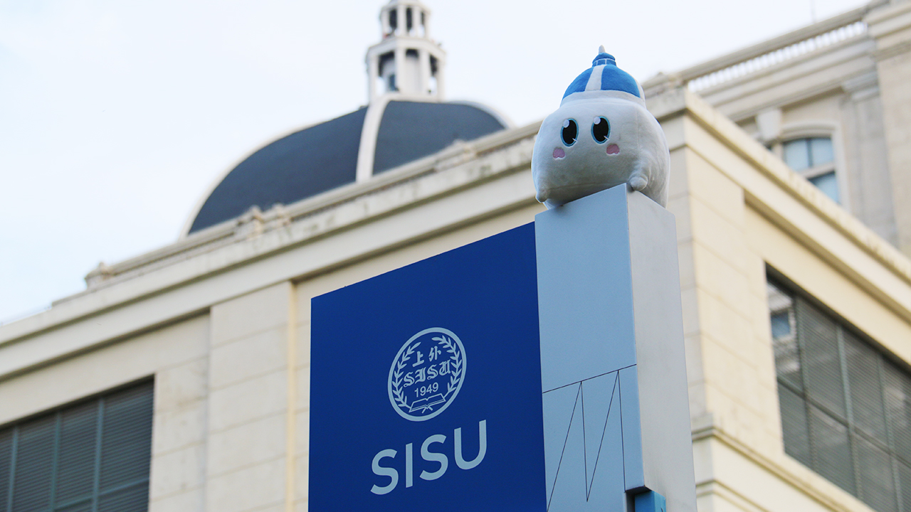
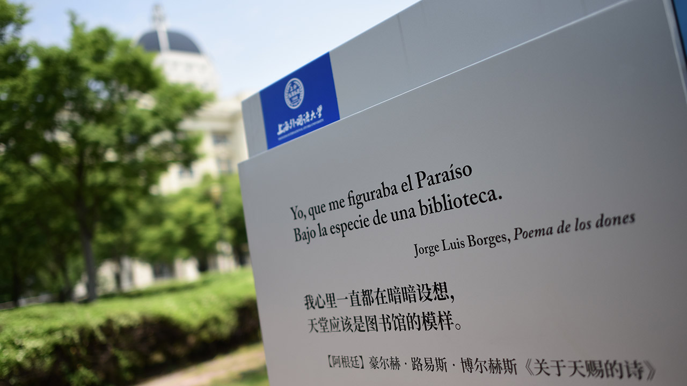

上外空间导视系统
许你一个不迷路的西索校园：上外空间导视系统 V2.0


编者按：初荷新绽，五月翩然。一切仿佛从春日的含苞欲放慢慢变成夏日的绿意繁荫，美丽的上外校园里也悄然发生了变化。也许，细心的你已经注意到，在虹口校区和松江校区，道路两侧树起了颇具设计感的导视路标，各大建筑旁也增添了全新的楼名指示，还有遍布校园角落的多语种诗句佳篇。
导视系统设计（Signage Design）是构建空间认知体系的重要方式，它不仅是简单的路径信息指示，引导人流与车辆的往来，同时也是文化内涵的彰显，有助于增加环境形象的识别度。本次导视系统的升级，究竟让上外的校园空间发生哪些改变呢？下面随小编一探究竟吧。
SISU*Signage 设计理念
上海外国语大学校园导视系统设计采用黄金分割比例组合，使整体造型蕴藉追求完美和卓越的特质。在轮廓装饰部分巧妙融合上外校徽中的书本图案和古典线装书脊的线条元素，表现上外“格高志远、学贯中外”的大学精神。同时，还采用地球经纬线作为辅助设计元素，彰显上外“诠释世界、成就未来”的办学理念，从而构建国际化学府形象。
校园导视系统作为上外视觉形象识别系统（Visual Identity, VI）的延伸，在色彩上主要采用学校标准色 “上外蓝” （SISU Blue），由蓝色系的明度变化代表博大的海洋文明，并与象征广阔的大陆文明的明黄色互为搭配，意喻海陆文明的水乳交融、中外文化的兼容并包。
基于人体工程学的点位布局
本次上外导视系统升级主要针对校园户外空间，虹口和松江两个校区共计 142 个点位，分别涵盖入口总体信息标识、户外人流分流信息标识、建筑物名称标识、道路名称标识、机动车停放位置标识、非机动车停放位置标识、公告宣传栏、多语种标语牌、车辆警示标识、户外车流分流信息标识、校区班车候车点标识等 11 种类型。
这些点位的布局及其尺寸，经过专业测算，综合考虑行进路线、人流高峰交汇处、周围环境匹配度，以及人体工程学因素，指向清晰，层次分明，一方面满足日常使用和查找的需求，能更清楚的了解到所处的空间方位；另一方面也使信息观看变得舒适与便捷，更为赏心悦目。
SISU 发布标准平面地图
长期以来，因基础设施建设，上外校园内的建筑布局已发生较多改变，有楼宇新设和改造，也有各类场所添置和调整。虽已有3D地图和全景校园导览等网络平台支持，但在学术会议举办、新生入学报到、校外来访参观等现场引导过程中，仍缺少更为直观和实用的平面图作为参考。
随着此次导视系统的更新，两座校区终于有了崭新的平面图。当你徜徉于虹口和松江校区的各大校门入口和主干道，都可以看到一面印有彩色地图的高大钢制立牌，上面按编号清晰地标明各场馆设施的位置，地名下方还附有标准化的英文译写名称。